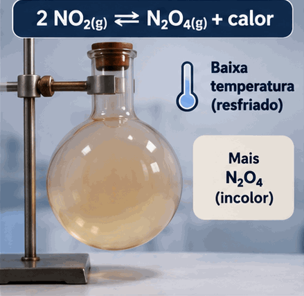

Equilíbrio Químico · Aula completa
Roteiro do alunoBem-vindo à aula de Equilíbrio Químico! Este material foi organizado para funcionar como apresentação do professor e livro de estudo do aluno. Comece com a teoria, pratique questões básicas e avance até as 10 questões da lista de recuperação final, com gráficos redesenhados e resolução comentada.
1. O que é equilíbrio químico?
TeoriaUma reação química transforma reagentes em produtos. Em determinadas condições, a transformação também acontece no sentido contrário. Esse tipo de reação é chamado de reversível.
A seta dupla indica que A pode formar B e B pode formar A. Há uma reação direta (esquerda → direita) e uma reação inversa (direita → esquerda).
Ao atingir o equilíbrio químico dinâmico, a velocidade da reação direta é igual à velocidade da reação inversa. As reações não param; as concentrações se mantêm constantes enquanto as condições do sistema não mudam.
Cuidado: concentrações constantes não significam concentrações iguais. Um equilíbrio pode ter 3 mol/L de A e 1 mol/L de B.
💡 Curiosidade: o NO2(g) — dióxido de nitrogênio — é um gás castanho-avermelhado. Já o N2O4(g) — tetróxido de dinitrogênio — é incolor. Essas substâncias participam do equilíbrio:

Ao aquecer, a reação é favorecida no sentido de formar mais NO2, e a mistura fica mais escura. Ao resfriar, forma-se mais N2O4, e a mistura fica mais clara. Assim, a mudança de cor mostra que a composição do equilíbrio foi alterada!
2. Coeficientes, balanceamento e proporções
TeoriaOs coeficientes estequiométricos são os números colocados antes das fórmulas para conservar o número de átomos em uma equação balanceada.
Para cada 1 mol de N₂ consumido no sentido direto, 3 mol de H₂ são consumidos e 2 mol de NH₃ são formados. A variação respeita a proporção −1 : −3 : +2.
| Símbolo | O que significa |
|---|---|
| 3 antes de H₂ | Coeficiente: 3 moléculas ou 3 mol de H₂ |
| 2 abaixo de H em H₂ | Índice: 2 átomos de H em cada molécula |
Como balancear: em N₂ + H₂ ⇌ NH₃, primeiro coloque 2 antes de NH₃ para conservar N; depois coloque 3 antes de H₂ para conservar H. A forma final é N₂ + 3 H₂ ⇌ 2 NH₃.
Os coeficientes terão duas funções nesta aula: (1) indicar as quantidades que variam na reação; (2) virar expoentes nas expressões de K.
3. Mol, concentração e unidades
TeoriaMol é uma unidade de quantidade de matéria. Um mol contém aproximadamente 6,02 × 10²³ entidades especificadas (como moléculas ou íons).
Concentração molar informa quantos mol de soluto existem por litro de solução. Colchetes indicam concentração: [H₂] = 0,5 mol/L.
| Símbolo | Significado | Unidade |
|---|---|---|
| C | concentração molar | mol/L |
| n | quantidade de matéria | mol |
| V | volume de solução | L |
| m | massa | g |
| M | massa molar | g/mol |
Exemplo completo: da massa à concentração
Temos 40 g de NaOH (massa molar 40 g/mol) em 2 L de solução.
- Encontrar mol: n = m/M = 40/40 = 1 mol.
- Encontrar concentração: C = n/V = 1/2 = 0,5 mol/L.
O que significa o resultado? A concentração de 0,5 mol/L indica que há 0,5 mol de NaOH por litro de solução. Em questões de equilíbrio químico, se as concentrações já forem fornecidas em mol/L, basta utilizá-las diretamente na expressão de Kc. Só precisamos calcular a concentração quando a questão fornecer a quantidade de matéria e o volume (ou a massa e a massa molar).
4. Constante de equilíbrio Kc
TeoriaA constante Kc relaciona as concentrações de produtos e reagentes quando a reação já está em equilíbrio. A expressão é construída a partir dos coeficientes da equação balanceada, mas os valores das concentrações vêm dos dados do problema (ou de cálculos realizados com esses dados).
1º — Como se monta a expressão?
Regra: produtos no numerador (em cima), reagentes no denominador (embaixo). Os coeficientes tornam-se expoentes. Os índices das fórmulas, como o 2 em H2, não são esses expoentes.
2º — Exemplo de questão: o que foi dado?
Esses números são os dados hipotéticos deste exercício. Não são obtidos automaticamente dos coeficientes.
| Substância | H2 | I2 | HI |
|---|---|---|---|
| Coeficiente da equação | 1 | 1 | 2 |
| Concentração dada no equilíbrio | 0,50 mol/L | 0,50 mol/L | 1,00 mol/L |
Compare as duas linhas: 1 : 1 : 2 são coeficientes, enquanto 0,50; 0,50; 1,00 mol/L são concentrações medidas. Não são a mesma coisa.
Passo 1 — Montar a expressão usando os coeficientes.
Passo 2 — Substituir as concentrações fornecidas no enunciado.
Passo 3 — Resolver primeiro a potência e a multiplicação.
3º — O que significam Inicial, Variação e Equilíbrio?
Uma tabela ajuda a acompanhar o que acontece com as substâncias. Ela é útil quando a questão informa concentrações iniciais e pede para descobrir o que sobra no equilíbrio.
Para visualizar, vamos imaginar um início possível para o mesmo exemplo. Suponha que, inicialmente, houvesse 1,00 mol/L de H₂, 1,00 mol/L de I₂ e nenhum HI. Esses valores iniciais foram escolhidos apenas para ensinar a tabela; eles não foram informados no enunciado acima.
| Momento | H2 | I2 | HI |
|---|---|---|---|
| Inicial (imaginado) | 1,00 | 1,00 | 0 |
| Variação (calculada) | −0,50 | −0,50 | +1,00 |
| Equilíbrio (dado) | 0,50 | 0,50 | 1,00 |
Todas as concentrações estão em mol/L. Os sinais − indicam consumo e o + indica formação no avanço líquido da reação direta.
- O HI passou de 0 para 1,00 mol/L: foram formados 1,00 mol/L de HI.
- A equação diz que, para cada 2 mol de HI formados, são consumidos 1 mol de H₂ e 1 mol de I₂. Portanto, para formar 1,00 mol/L de HI, são consumidos 0,50 mol/L de cada reagente.
- Subtraindo dos valores iniciais: H₂ = 1,00 − 0,50 = 0,50; I₂ = 1,00 − 0,50 = 0,50 mol/L.
4º — H₂ poderia ser 0,50 e I₂ ser 0,80 mol/L?
Sim! Outro exercício poderia informar, no equilíbrio:
[H₂] = 0,50 mol/L; [I₂] = 0,80 mol/L; [HI] = 1,00 mol/L.
Isso é possível, por exemplo, se começássemos com 1,00 mol/L de H₂, 1,30 mol/L de I₂ e 0 de HI: a reação consumiria 0,50 mol/L de cada reagente e formaria 1,00 mol/L de HI.
Por quê? Porque a proporção 1 : 1 : 2 vale para o consumo e a formação, não para somar as concentrações de H₂ e I₂.
Uma observação importante: e se a temperatura for a mesma?
Para uma mesma reação na mesma temperatura, Kc mantém o mesmo valor. Por isso, o exemplo com Kc = 4 e o exemplo com Kc = 2,5 não representam dois equilíbrios possíveis na mesma temperatura. Se Kc fosse 4 e [H₂] = 0,50 mol/L e [I₂] = 0,80 mol/L, então [HI] precisaria satisfazer [HI]2 = 4 × 0,50 × 0,80 = 1,60, ou seja, [HI] ≈ 1,26 mol/L.
Interpretação de K: K muito maior que 1 favorece produtos; K muito menor que 1 favorece reagentes. K não mede a velocidade da reação.
Unidades: em exercícios escolares, podem aparecer unidades formais obtidas das potências de mol/L. A constante termodinâmica rigorosa é adimensional, porque utiliza atividades relativas a estados de referência.
5. Gás, sólido, líquido, aquoso e solvente
TeoriaLeia as indicações após as fórmulas: (s) sólido; (l) líquido; (g) gás; (aq) substância dissolvida em água.
| Espécie | Entra na expressão escolar de K? | Por quê? |
|---|---|---|
| Gás (g) | Sim | Pressão/concentração gasosa pode variar |
| Soluto aquoso (aq) | Sim | Concentração na solução pode variar |
| Sólido puro (s) | Não | Atividade constante enquanto a fase pura existe |
| Líquido puro (l) | Não | Atividade da fase líquida pura é constante |
| Água como solvente aquoso diluído | Não | Sua atividade é praticamente constante |
Os sólidos participam da reação, mas não aparecem na expressão. Na teoria, a constante é descrita por atividades. Não é verdade que “todo líquido não entra”: uma mistura líquida de composição variável requer análise mais cuidadosa.
Como reconhecer um solvente?
Quando uma substância está dissolvida em água, como CH₃COOH(aq), a água é o solvente e o ácido é o soluto. Na ionização do ácido acético, a água líquida utilizada como solvente não aparece em Ka.
Se a água está na forma de vapor H₂O(g), ela participa da expressão como gás — não deve ser excluída!
6. Cálculo com tabela inicial–variação–equilíbrio
TeoriaNem sempre a questão fornece as concentrações de todas as substâncias no equilíbrio. Às vezes, ela informa as concentrações iniciais e a concentração final de apenas uma espécie. A tabela nos ajuda a descobrir as outras.
Exemplo de questão — descubra as concentrações e calcule Kc
Todos esses números são dados hipotéticos deste exercício.
Passo 1 — Leia os coeficientes e entenda de onde vem o 2x.
| Substância | H2 | I2 | HI |
|---|---|---|---|
| Coeficiente na equação | 1 | 1 | 2 |
| Variação, se a reação avançar x | −x | −x | +2x |
Chamamos de x a quantidade, em mol/L, que é consumida de H2 no sentido direto. Pela proporção 1 : 1 : 2, também são consumidos x de I2 e são formados 2x de HI.
Passo 2 — Monte a tabela usando x (antes de conhecer seu valor).
| Momento | H2 (mol/L) | I2 (mol/L) | HI (mol/L) |
|---|---|---|---|
| Inicial — dado | 1,0 | 1,0 | 0 |
| Variação — coeficientes | −x | −x | +2x |
| Equilíbrio — inicial + variação | 1,0 − x | 1,0 − x | 2x |
Na coluna de HI, a concentração inicial era zero. Como formamos 2x, a concentração de equilíbrio é 0 + 2x = 2x. O enunciado informou que essa concentração é 1,2 mol/L.
Passo 3 — Encontre x pela concentração de HI que a questão forneceu.
Isso significa que 0,6 mol/L de H2 e 0,6 mol/L de I2 foram consumidos; o HI formado foi 2 × 0,6 = 1,2 mol/L.
Passo 4 — Substitua x na tabela e encontre as concentrações de equilíbrio.
| Momento | H2 (mol/L) | I2 (mol/L) | HI (mol/L) |
|---|---|---|---|
| Inicial | 1,0 | 1,0 | 0 |
| Variação | −0,6 | −0,6 | +1,2 |
| Equilíbrio | 0,4 | 0,4 | 1,2 |
Conferindo: [H2] = 1,0 − 0,6 = 0,4 mol/L; [I2] = 1,0 − 0,6 = 0,4 mol/L; [HI] = 0 + 1,2 = 1,2 mol/L.
Passo 5 — Monte Kc com os expoentes da equação balanceada.
Passo 6 — Use somente as concentrações da linha Equilíbrio.
Em outros exercícios, a questão pode fornecer valores diferentes de concentração inicial, variação ou equilíbrio. O procedimento é o mesmo: organizar os dados, usar os coeficientes para relacionar as variações, encontrar o que falta e calcular Kc. Se uma equação produzir concentração negativa, a solução não é fisicamente válida.
7. Pressão parcial e gases: o caso da altitude
Essencial · questão 09Antes de falar de equilíbrio no sangue, precisamos entender uma ideia simples: o ar é uma mistura de gases. Ele contém, entre outros componentes, aproximadamente 21% de oxigênio (O2).
1º — O que significa pressão parcial?
É a parte da pressão total que corresponde a um gás da mistura. Por exemplo, o oxigênio contribui com uma parte da pressão do ar. Não precisamos fazer cálculos dessa pressão para resolver a lista: basta entender o que acontece quando ela diminui.
2º — O que isso tem a ver com equilíbrio químico?
A hemoglobina (Hb) é a proteína presente nas hemácias que transporta oxigênio. Na lista, sua ligação com o oxigênio é representada por:
| Símbolo | O que representa |
|---|---|
| Hb | Hemoglobina sem oxigênio ligado naquele sítio |
| O2 | Oxigênio disponível para se ligar à hemoglobina |
| HbO2 | Hemoglobina oxigenada, formada no sentido direto |
Se a disponibilidade de O2 diminui, a formação de HbO2 é desfavorecida. É esse raciocínio que você utilizará para interpretar a questão sobre pessoas em grandes altitudes.
8. Princípio de Le Chatelier: para onde o equilíbrio se desloca?
Essencial · questões 05, 08 e 10Imagine que uma reação já atingiu o equilíbrio. Agora alguém adiciona ou retira uma substância. O sistema pode passar a favorecer temporariamente um dos sentidos da reação, até alcançar um novo equilíbrio.
1º — Identifique reagentes e produtos
Reagentes ficam à esquerda (A e B). Produtos ficam à direita (C). Se a reação é favorecida para a direita, ela forma mais produtos; se é favorecida para a esquerda, forma mais reagentes.
2º — O que acontece quando adicionamos ou retiramos substâncias?
| O que fazemos? | O que o sistema tende a fazer? | Sentido favorecido |
|---|---|---|
| Adicionamos A (reagente) | Consumir parte do A adicionado, formando mais C | Direita → produtos |
| Retiramos A (reagente) | Formar mais A a partir de C | Esquerda → reagentes |
| Adicionamos C (produto) | Consumir parte do C adicionado | Esquerda → reagentes |
| Retiramos C (produto) | Formar mais C | Direita → produtos |
Essas regras simples valem para espécies cuja quantidade adicionada ou retirada realmente altera sua atividade no sistema. Sólidos e líquidos puros presentes como fases próprias não seguem automaticamente a regra.
3º — Exemplo parecido com o da lista: íon comum
Um sal pouco solúvel está em equilíbrio com os íons que libera na água:
Se adicionarmos uma substância que libere mais íons SO42−, estaremos acrescentando um produto da reação. O equilíbrio tende a favorecer o sentido inverso, formando mais BaSO4 sólido. Isso é chamado de efeito do íon comum.
4º — Quando há formação de complexos
Algumas substâncias, chamadas ligantes, podem se ligar a íons metálicos que estão dissolvidos, formando complexos. Se o ligante reduz a quantidade de metal livre na solução, pode favorecer a dissolução adicional do metal presente em um material. É a ideia necessária para compreender a questão do alumínio e do gluconato.
5º — E se o equilíbrio envolver um gás?
Na formação de depósitos minerais em cavernas, o CO2 aparece entre os produtos. Favorecer sua saída da água pode ajudar a formação do mineral sólido. Já o aumento da disponibilidade de CO2 dissolvido tende a favorecer o sentido contrário da reação apresentada na lista.
9. ΔH, calor e temperatura: somente interpretação
Essencial · questões 03, 06 e 10Algumas reações liberam calor, enquanto outras absorvem calor. Na sua lista, não é necessário calcular a variação de entalpia (ΔH): quando ela importa, o enunciado já fornece o sinal.
1º — Como identificar uma reação exotérmica?
Uma reação exotérmica libera calor no sentido direto. O enunciado costuma indicar:
Se aquecemos o sistema, favorecemos o sentido que consome calor: o inverso. Se resfriamos, favorecemos a reação direta, que libera calor.
2º — Como identificar uma reação endotérmica?
Uma reação endotérmica absorve calor no sentido direto. O enunciado costuma indicar:
Se aquecemos, favorecemos o sentido direto, que absorve calor. Se resfriamos, favorecemos o inverso.
3º — Tabela para resolver as questões
| Sinal fornecido | Reação direta | Se aquecer... | Se resfriar... |
|---|---|---|---|
| ΔH < 0 | Exotérmica (libera calor) | Favorece reagentes (←) | Favorece produtos (→) |
| ΔH > 0 | Endotérmica (absorve calor) | Favorece produtos (→) | Favorece reagentes (←) |
4º — E quando a questão fornece uma tabela de Kc em várias temperaturas?
Em vez de informar ΔH, a questão pode mostrar como Kc muda com a temperatura. Não é preciso calcular entalpia para interpretar esses valores:
| Ao aumentar a temperatura... | O que isso indica? |
|---|---|
| Kc aumenta | O aumento da temperatura favorece os produtos da reação escrita. |
| Kc diminui | O aumento da temperatura desfavorece os produtos da reação escrita. |
Na questão 03, o exercício fornece uma tabela e pede identificar a temperatura cujo Kc é maior. Basta comparar os valores apresentados, sem realizar cálculo de ΔH.
11. Revisão para a lista da escola
Revisão dirigidaA lista da recuperação exige também reconhecer gráficos, interpretar pH e H⁺, entender complexação, sais hidratados, solubilidade e gases dissolvidos. São conteúdos que revisaremos agora, sem adiantar respostas das questões do material.
11.1 Gráficos: tempo, concentração e equilíbrio
Questões 01 e 02Em um gráfico concentração × tempo, uma linha crescente representa uma substância que está se formando em quantidade líquida. Uma linha decrescente indica consumo líquido. Quando as curvas passam a ser horizontais, as concentrações ficam constantes.
No gráfico redesenhado, os valores finais são atingidos aos 4 minutos. A variação de H₂ é −3, de N₂ é −1 e de NH₃ é +2 mol/L, respeitando os coeficientes 3:1:2 da síntese.
11.2 pH, íons H⁺ e esmalte dentário
Questões 04 e 07pH é uma medida da acidez. Em soluções aquosas diluídas a 25 °C, valores menores de pH indicam maior atividade de H⁺. Diferença de uma unidade no pH corresponde a fator 10 em atividade de H⁺.
| pH | Classificação comum (25 °C) |
|---|---|
| 2 | Ácido |
| 5 | Ácido |
| 7 | Neutro |
| 9 | Básico |
A hidroxiapatita é o principal mineral do esmalte. Em meio mais ácido, sua dissolução costuma ser favorecida. O CO₂ dissolvido também pode formar espécies ácidas e contribuir para a redução do pH da água.
11.3 Formação de complexos químicos
Questão 05Alguns íons metálicos, como espécies de alumínio, podem se ligar a moléculas ou íons chamados ligantes, formando complexos de coordenação.
Se o ligante reduz a quantidade de metal livre em solução, o equilíbrio da dissolução de um material que contém esse metal pode favorecer a liberação de mais metal. Há dois equilíbrios acoplados: dissolução e complexação.
- O material libera uma pequena quantidade de metal para a solução.
- O ligante captura parte do metal livre e forma um complexo.
- A diminuição da espécie livre pode favorecer mais dissolução do material.
11.4 Sais anidros e hidratados
Questão 06Anidro significa sem água de cristalização; hidratado indica que a água está presente na estrutura cristalina na proporção indicada pela fórmula.
No modelo da questão, a forma anidra é azul e a hidratada é rosa. O “·6H₂O” indica seis moléculas de água de cristalização por unidade de fórmula.
Se a reação direta tiver ΔH < 0, o aquecimento favorece a reação inversa e, quando a água escapa, a forma anidra é regenerada.
11.5 Dissolução de gases e pressão parcial
Questões 07 e 09O oxigênio do ar pode dissolver-se em água ou no plasma sanguíneo. A quantidade de um gás dissolvido frequentemente aumenta quando sua pressão parcial acima do líquido aumenta, mantida a temperatura. É a ideia da Lei de Henry.
- Em um ar com 21% de O₂ a 1 atm, P(O₂) ≈ 0,21 atm.
- Se a pressão total cair para 0,6 atm, P(O₂) ≈ 0,21 × 0,6 = 0,126 atm.
- Em grandes altitudes, a pressão parcial menor dificulta a oxigenação do sangue.
A hemoglobina participa do equilíbrio Hb + O₂ ⇌ HbO₂. Menor disponibilidade de O₂ tende a diminuir a fração de hemoglobina oxigenada.
11.6 Dissociação, precipitação e íon comum
Questão 08Sais iônicos que se dissolvem em água liberam seus íons. O NaCl, por exemplo, se dissocia em Na⁺ e Cl⁻. Alguns sais, como o BaSO₄, são pouco solúveis e estabelecem equilíbrio entre sólido e íons dissolvidos.
Quando adicionamos outro sal que forneça SO₄²⁻, como K₂SO₄, ocorre o efeito do íon comum. A presença extra de sulfato favorece a formação de BaSO₄ sólido e reduz a concentração de Ba²⁺ dissolvido.
O sentido inverso (íons → sólido) chama-se precipitação. Não se recomenda adicionar BaCl₂, pois ele fornece diretamente bário solúvel e tóxico.
15. Resumo final do conteúdo
Para revisar| Quando você encontrar... | Pense imediatamente em... |
|---|---|
| Curvas horizontais num gráfico | Concentrações de equilíbrio e velocidades iguais |
| Coeficientes antes das fórmulas | Expoentes em Kc e proporção das variações |
| (s) ou (l) puro | Atividade constante: não aparece na expressão |
| (g) ou (aq) | Pode aparecer em Kc/Kp |
| Kc usando gráfico | Use a região estabilizada, não a inicial |
| ΔH < 0 | Sentido direto exotérmico; aquecer favorece o inverso |
| ΔH > 0 | Sentido direto endotérmico; aquecer favorece o direto |
| Mais H⁺ | Em geral menor pH e maior acidez |
| Íon comum | Diminuição da solubilidade do sal pouco solúvel |
| Complexante / ligante | Pode diminuir metal livre e favorecer extração do material |
| Menor P(O₂) em altitude | Menor disponibilidade de O₂ e hemoglobina oxigenada |